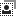
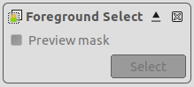
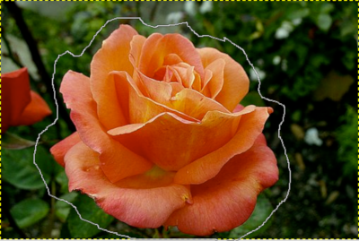
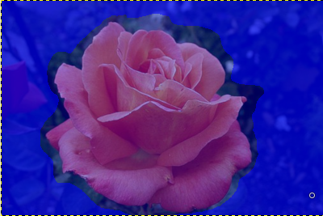
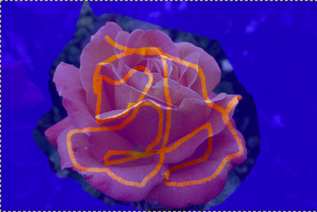
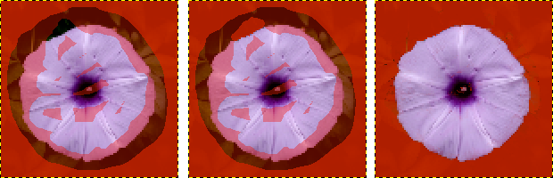
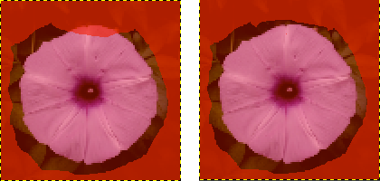

This tool lets you extract the foreground from the active layer or from a selection. After the selection is made, with its marching ants, you can copy-paste or click-and-drag it to another image used as background, and, inverting the selection, you can make changes in background.
There are different possibilities to activate the tool:
-
A partir da barra de menu → → ,
-
Ao clicar no ícone da ferramenta:

na caixa de ferramentas, -
Esta ferramenta não tem nenhum atalho, mas você pode definir um usando → → → → →
Let us start with an object that is easy to distinguish from the background and doesn't need to be refined.
![[Atenção]](images/warning.png)
|
Atenção |
|---|---|
|
The foreground select tool needs a lot of memory for its processing, depending on the size of the image. It is known to crash or slow down when using larger images. One way to improve this is to use Matting Global instead of Matting Levin. The slow processing speed can be improved by increasing the number of downsampled Levels, at the cost of using more memory. Both of these options also come with the disadvantage of being less accurate. |
-
The way it works is similar to the Free Select tool. Roughly select the object you want to extract, with a little bit of background around it. To get a more accurate outline, keep the mouse button pressed while moving. To use straight lines for parts of your selection, click and release the button between the start and end points of the straight section.
As soon you click to start drawing the selection, a small window pops up:

Before the selection is finished, only the button to close the dialog is active, allowing you to cancel and return to the original image (this can also be done by pressing the Esc key).
To finish the initial selection, it needs to be closed. When the mouse cursor hovers over the dot where you started the selection, it turns yellow. Click this to close the selection. Instead of doing that, you can also double-click to close the selection.

Seleção por cor
-
To create the mask from your selection, press Enter, or double-click inside the selection:

The mouse pointer now changes into a Paintbrush icon with a circle. The dark blue area (this color can be changed) shows the background. The lighter area covers the zone you have selected as foreground and a small part of background. Outside the selected area, the dark blue area is called the “Unknown pixels area”.
The options in the small window on top of the image become active:
-
A Preview mask checkbox that toggles displaying a preview of the foreground extraction status. The same can also be done by pressing the Enter key.
-
A button that will be used to create the extraction after marking the foreground.
-
-
Desenhar uma linha no primeiro plano: usa o pincel, cujo tamanho pode ser alterado nas opções, desenhe uma linha contínua em primeiro plano selecionado repassando cores que serão mantidas para a extração. A cor usada para desenhar a linha não tem importância, não usar a mesma cor de primeiro plano é melhor. Tenha cuidado para não pintar pixels do fundo .
With this one-color object, that is easy to distinguish from the background, a few strokes are enough:

-
Toggle the preview button, or press Enter to verify the result.
![[Nota]](images/note.png)
Nota You can draw directly on this Preview mask and see the result immediately.
-
When you are satisfied with the result, click the button, or press Enter to finalize the selection and finish the foreground selection operation. You can cancel the operation by pressing Esc.
Normally, tool options are displayed in a window attached under the Toolbox as soon as you activate a tool. If they are not, you can access them from the main menu through → → which opens the option window of the selected tool. The available tool options can also be accessed by double clicking the corresponding tool icon in the Toolbox.
- Modo, Enevoar bordas
-
Nota Veja Ferramentas de Seleção para obter ajuda com opções que são comuns a todas essas ferramentas. Apenas as opções que são específicas para esta ferramenta são explicadas aqui.
- Draw mode
-
Draw foreground: when selecting with a brush, what you draw will be considered part of the foreground, i.e. included in the selection.
Draw background: when selecting with a brush, what you draw will be considered part of the background, i.e. it will be excluded from the selection.
Draw unknown: When drawing on the background, outside the initial selection, it marks the drawn pixels as belonging to the foreground.
- Stroke width
-
The size of the brush to select with.
- Cor de pré-visualização
-
-
Color (default): the color of the selection preview mask; the current color is shown in the color swatch. You can change the color by clicking on it.
-
Grayscale: allows you to see the resulting mask in black and white. This preview is similar to a layer mask. It can be useful in images where foreground and background color are similar and difficult to distinguish.
-
- Engine
-
This is the method that will be used to select the foreground. Choices are Matting Levin, and Matting Global. Note that Matting Levin has been temporarily removed on Windows due to crashes. When it is available, it is the default.
Matting Levin usually gives the best results, but is slower, especially on larger images when there are large unknown areas.
- Levels (Matting Levin only)
-
The number of downsampled levels to use. Higher numbers can improve processing speed at the cost of using more memory. The default is 2 levels.
- Active levels (Matting Levin only)
-
The number of levels to perform solving. Higher numbers can increase the selection a bit at the cost of slowing down processing. Setting this number higher than Levels has no effect. The default is 2 active levels.
- Iterations (Matting Global only)
-
Higher values may improve the result at the cost of being slower. The default is 2 iterations.
In a lot of images, distinguishing what is foreground or background can be difficult. Refining the selection allows you to extract these foregrounds. The procedure steps are the same as above, but, while drawing the foreground, you will often toggle Preview, use Zoom (+ key), switch to Draw background to delete unwanted background areas, and switch between Grayscale and Color preview mode.
Figura 14.16. “Draw background” Example

On the left: drawing foreground by mistake went over the background area: a part of the background will be included in the foreground selection!
In the middle: Draw background option is checked: draw on the unwanted background pixels.
On the right: unwanted selected pixels in the background are no longer in the foreground selection.
Figura 14.17. “Draw unknown” Example

On the left: the selection left a small part of the foreground unselected, in the unknown pixels area.
On the right: with Draw unknown option checked, draw on the unselected pixels to select them. This shows that they are now selected.